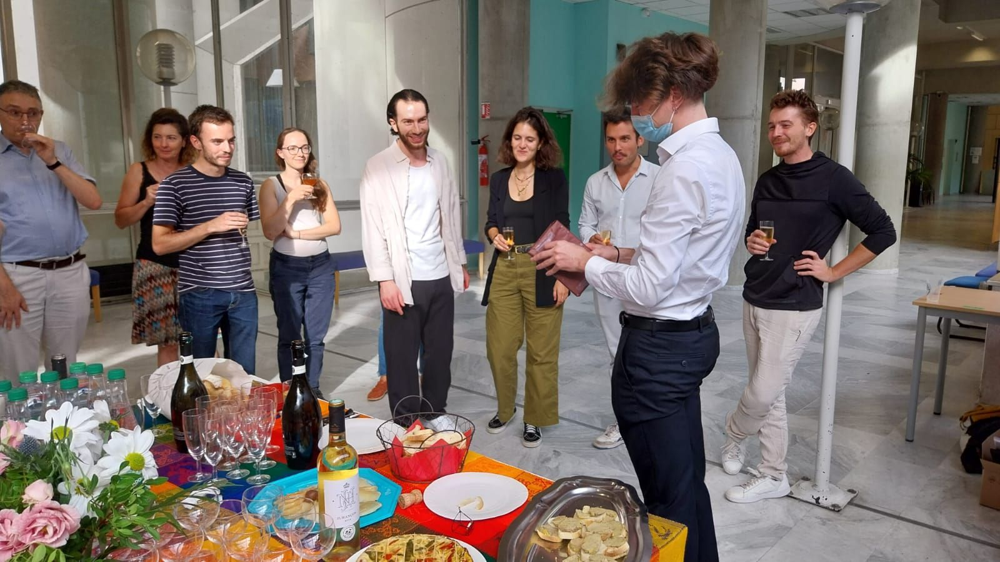
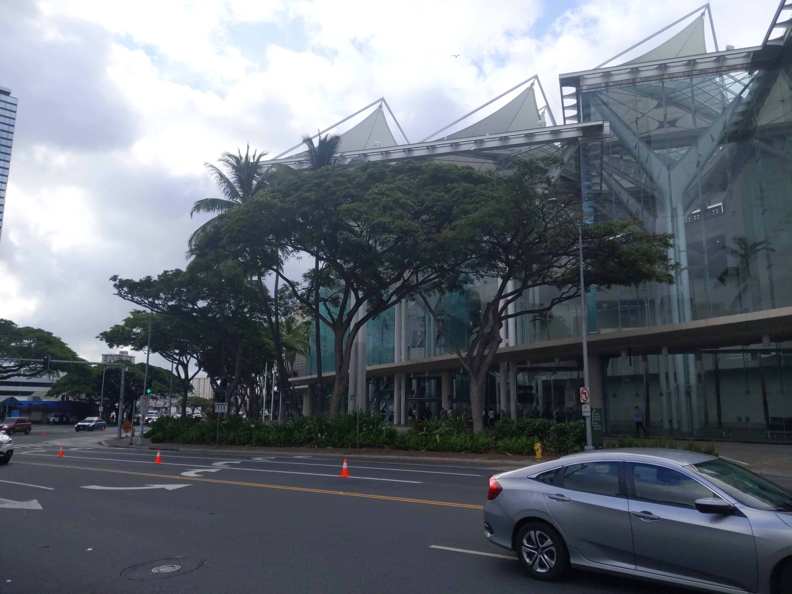
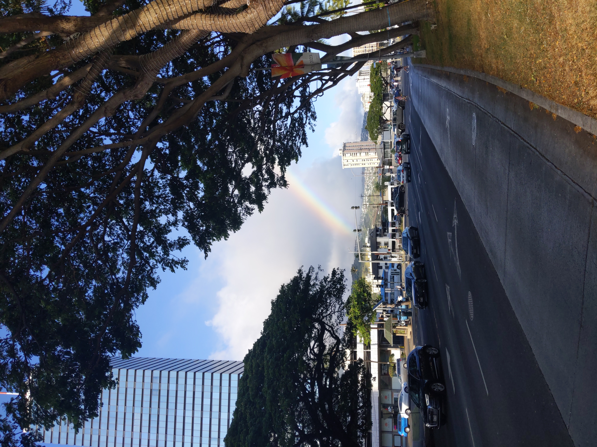
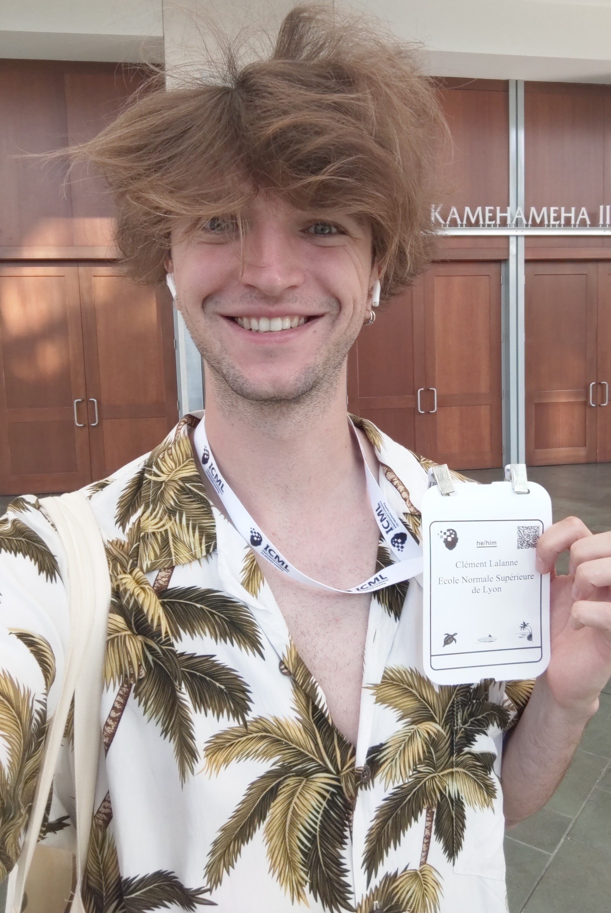
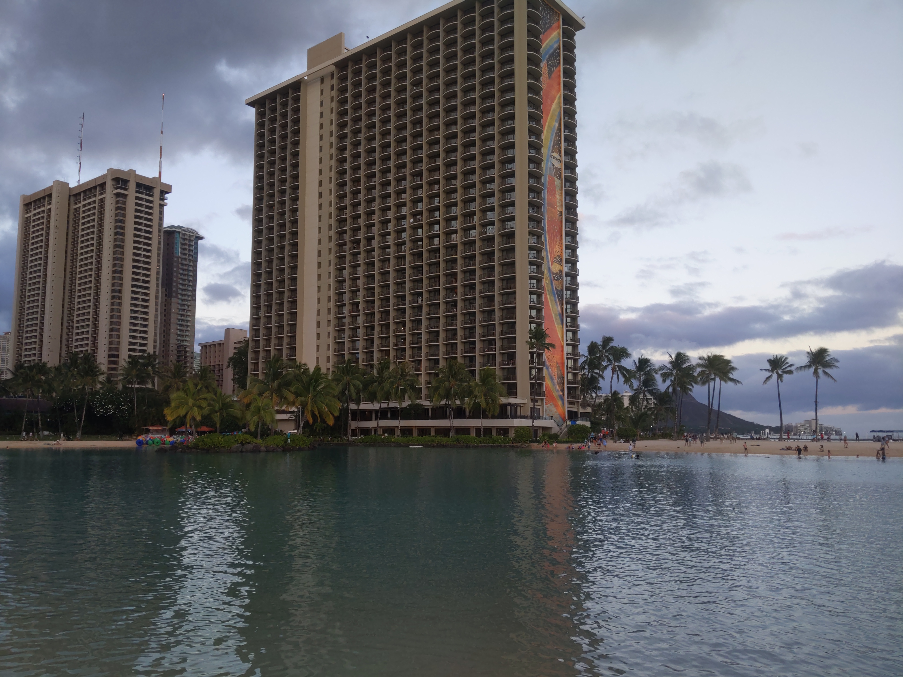

News Archive
- October 2023 Since October, I started a new position as a postdoctoral researcher in Mathematics with Jérôme Bolte and Sébastien Gadat at Toulouse School of Economics, Université Toulouse 1 Capitole !
- October 2023 This is with great pleasure that I announce that on October 4th, I successfully defended my PhD thesis in computer science titled "On the tradeoffs of statistical learning with privacy" at ENS Lyon. Huge thanks to anyone that made this possible, and in particular to my advisors Aurélien Garivier and Rémi Gribonval, to the referees Aurélien Bellet and Béatrice Laurent-Bonneau, and to the president of the jury Élisa Fromont.

- September 2023 Just got back from GRETSI 2023 in beautiful Grenoble, France. Really interesting to attend this human-size signal-processing conference, and to see presentations outside of my usual topics of interest. Congrats to anyone that presented and to the organization team. I am still blown away by the amazing performance of the theater troupe Le Gravillon for their play "Point de Bascule" (social activity during the conference) !
- August 2023 Our article About the Cost of Central Privacy in Density Estimation just got accepted for publication in the journal Transactions on Machine Learning Research. Huge thanks to my coauthors Aurélien Garivier and Rémi Gribonval.
- July 2023 Just got back from ICML 2023 in beautiful Honolulu, HI, USA where I presented a poster for our article Private Statistical Estimation of Many Quantiles. On scientific and human points of view, it was amazing to meet so many passionate people. Congratulations to the researchers for the high level of the presentations and to the organization team.
   

- July 2023 I am glad to announce that I am a laureate of the 2023 "Agrégation Externe de Mathématiques" (as an independent candidate during my PhD).
- June 2023 Our article Private Quantiles Estimation in the Presence of Atoms just got accepted for publication in the journal Information and Inference. You will soon be able to read it with a new template and some important updates thanks to the help from the reviewers. Also, huge thanks to my coauthors Clément Gastaud and Nicolas Grislain from Sarus Technologies, Aurélien Garivier and Rémi Gribonval.
- June 2023 Our article/experiment report Sparsity in neural networks can improve their privacy just got accepted to the french XXIXème Colloque Francophone de Traitement du Signal et des Images (GRETSI 2023 Conference). Huge thanks to the reviewers for their suggestions. Also, huge thanks to my coauthors Antoine Gonon, Léon Zheng, Quoc-Tung Le, Guillaume Lauga and Can Pouliquen. We are curently working on a scaled and extended version of this article.
- June 2023 Huge thanks to Dataiku for hosting the Privacy Preserving Machine Learning workshop on June 14th 2023 in Paris, and to anyone that contributed to the organization. Congratulations to everyone that presented for the high quality of the presentations !
- April 2023 Our article Private Statistical Estimation of Many Quantiles just got accepted to the fortieth International Conference on Machine Learning. Looking forward to present our work in Honolulu. Huge thanks to my coauthors Aurélien Garivier and Rémi Gribonval, and to the reviewers for the useful inputs and suggestions.
- April 2023 Our article On the Statistical Complexity of Estimation and Testing under Privacy Constraints just got accepted for publication in the journal Transactions on Machine Learning Research. You will soon be able to read it with a new template and some important updates thanks to the positive inputs from the reviewers. Also, huge thanks to my coauthors Aurélien Garivier and Rémi Gribonval.
- November 2022 Huge thanks to Meta for hosting the Privacy Preserving Machine Learning workshop on November 9th 2022 in Paris, and to anyone that contributed to the organization. Congratulations to everyone that presented for the high quality of the presentations !
- June 2022 Huge thanks to Sarus Technologies for hosting the Privacy Preserving Machine Learning workshop on June 8th 2022 in Paris, and to anyone that contributed to the organization. Congratulations to everyone that presented for the high quality of the presentations !